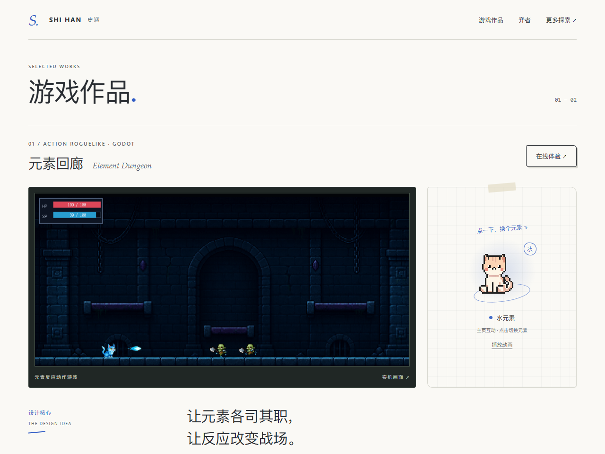
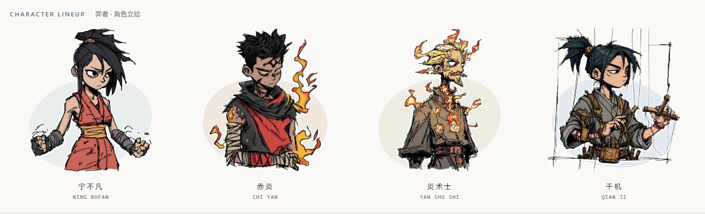
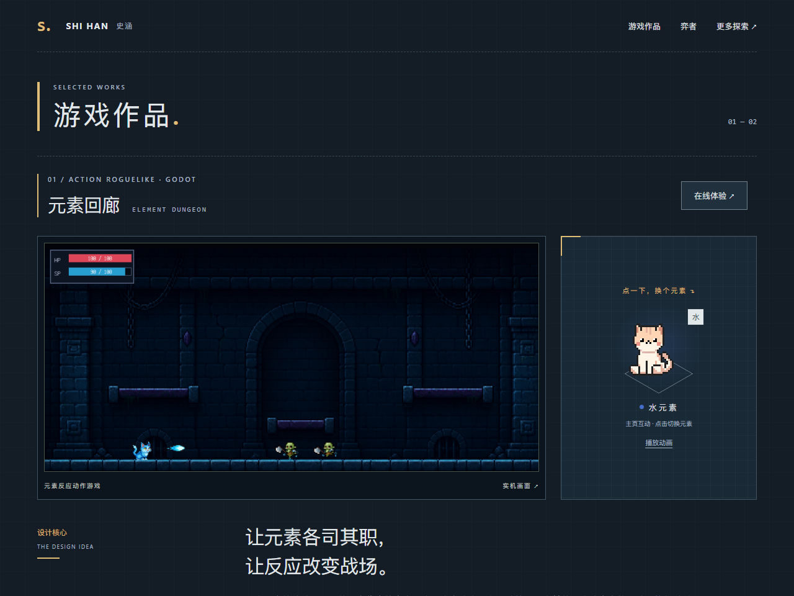
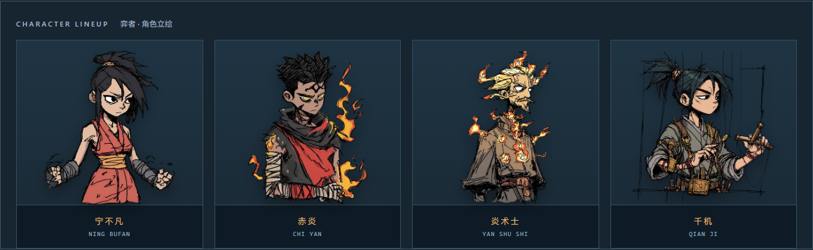
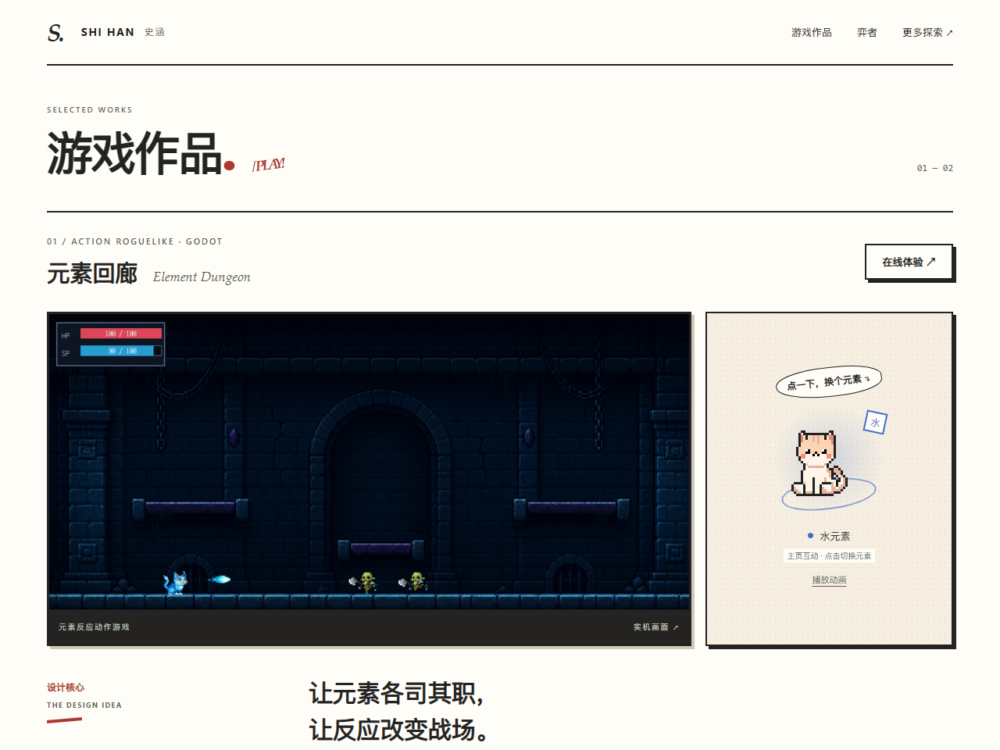
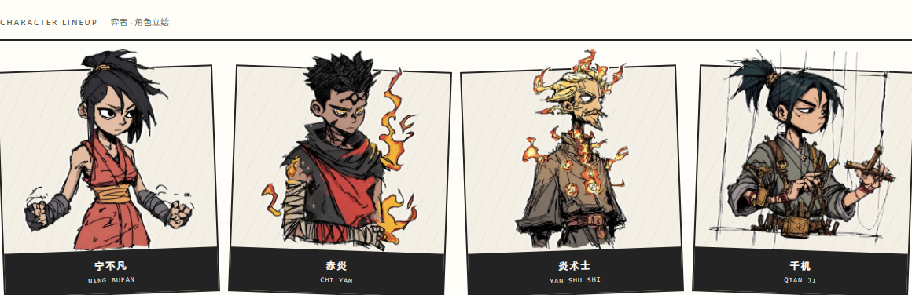

01 / SKETCHBOOK轻涂鸦设计手记暖白纸面、蓝色笔迹与小块网格。像一份整理过的设计手记，轻松、有细节，最接近原有的简约感。打开完整预览 ↗弈者 / 角色呈现
02 / GAME ATLAS独立游戏图鉴深蓝档案底、黄铜色标记、规则化的角色栏位。更有游戏资料库的氛围，实机画面与像素猫融入同一套界面。打开完整预览 ↗弈者 / 角色呈现
03 / COMIC PANELS极简漫画分镜黑白分镜框、朱红标注、对话气泡与硬边阴影。角色略微突破画框，个性最鲜明，也更贴合现有立绘的线条感。打开完整预览 ↗弈者 / 角色呈现